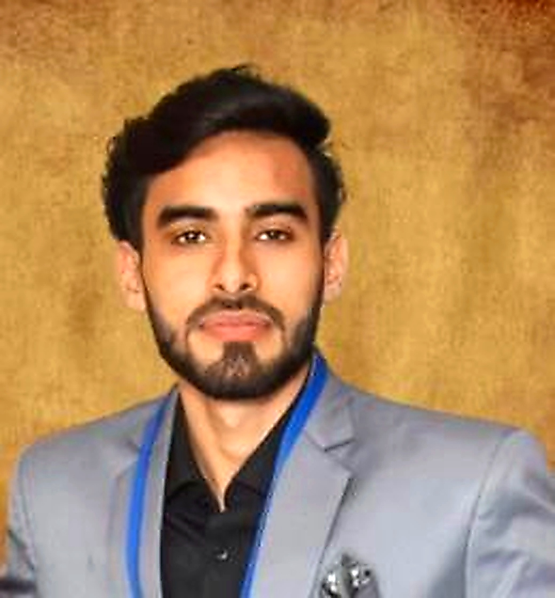

01
Educate
Provide free learning opportunities, study support and educational resources to children who need them.
THE PERSON BEHIND THE MISSION

Sarvrise Foundation did not begin with a big office, a large team, or a large fund.
It began with a thought.
Utkarsh Yadav started thinking about the idea while pursuing his MBA. Coming from a middle-class family, he understood the value of education, hard work and the sacrifices families make to create better opportunities for their children.
His father is a government servant and his mother is a homemaker. Growing up as the only brother among three sisters, Utkarsh experienced a family environment where responsibility, education and caring for others were deeply valued.
If education and opportunity can change my life, why shouldn't they be available to someone who simply cannot afford them?
During his student journey, he began noticing children who wanted to study but did not have the resources, families struggling with basic needs, and young people with the potential to learn technology but without the guidance or opportunities to begin.
Instead of waiting for the perfect time, Utkarsh decided to start with whatever he could do as a student — learn, connect, teach, support and create opportunities.
That idea became the foundation of Sarvrise Foundation.
The purpose is not simply to help someone for one day. It is to help people gain knowledge, skills, confidence and opportunities so that they can gradually build a better and more independent future.
About SARVRISE FOUNDATION
We are building a community where education and opportunity are not limited by financial circumstances.
Our vision
Our vision is to build an inclusive society where every child can learn, every young person can develop future-ready skills, and every individual facing hardship can access support and a pathway toward self-reliance.
We imagine communities where help is not just temporary relief — it becomes the starting point for confidence, skills, dignity and independence.
Our mission
Provide free learning opportunities, study support and educational resources to children who need them.
Introduce students and young people to AI, coding, digital tools and practical career-oriented skills.
Support people in need and connect them with opportunities that help them become more independent.
— SARVRISE FOUNDATION
Real people. Real stories.
Real Indian community and education photography, used to keep our mission visible and human.